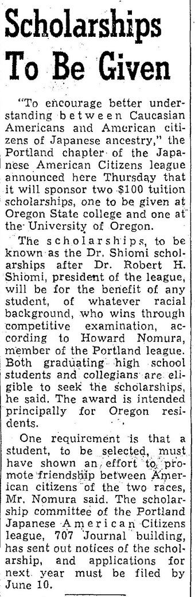
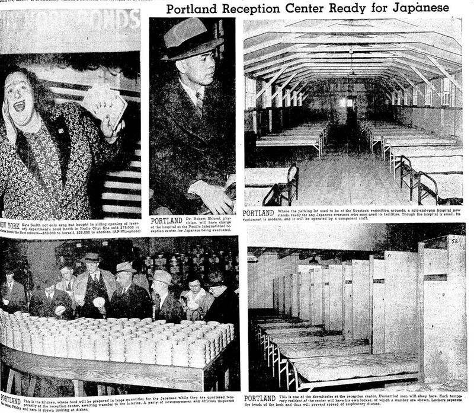
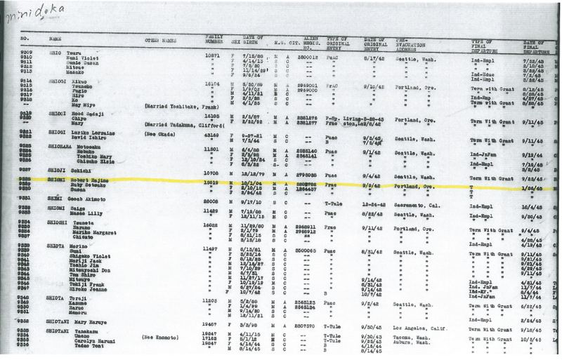
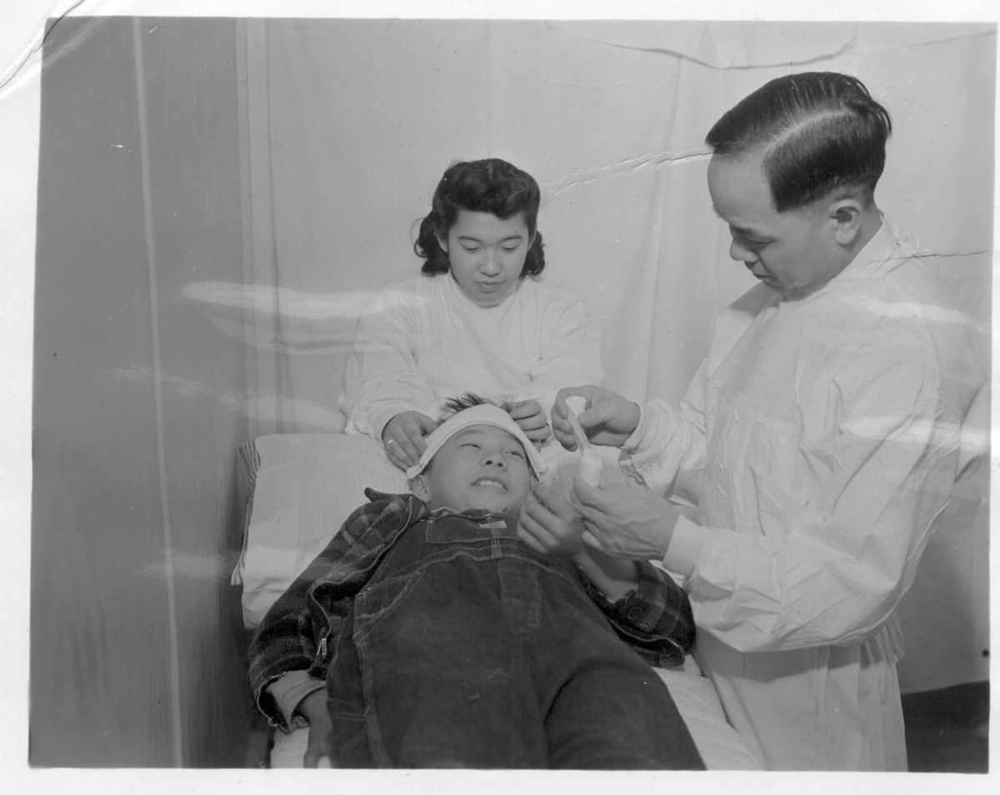
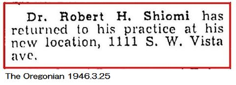

アメリカ日系一世 ロバート汐見の足跡（4）
日系人強制収容
1930年にロバート汐見はオレゴン大学医学部を卒業、ニューヨークでインターン生活を送り前途は洋々であった。しかし時代は戦争に向かって進み始め、1931年に満州事変、1937年に日中戦争が始まった。日米関係がいよいよ悪化する1941年5月23日、ロバートは汐見奨学基金を設立し、支部長を務めていた日系人協会（JACL)として地元紙オレゴニアンでリリースを行った。(写真1)
｢ヨーロッパ系アメリカ人と日系アメリカ人との相互理解のため、オレゴン州立大及びオレゴン大学の学生各1名に奨学金各100ドルを供与する。｣
｢奨学生の人種は一切問わない。奨学生に望むことはただ一つ。両者の相互理解に寄与する努力を行うこと。｣
6月10日応募締切の奨学金が誰に与えられたのかは判らないが、歴史が示す通りロバートの私財を投じた努力も空しく同年12月8日に太平洋戦争が勃発した。

Remember Peal Harborのスローガンの下、日本人排斥運動は苛烈を極め、1942年2月のルーズベルト大統領令により日本人の強制収容が始まった。16ヶ所に設置された一時収容所の内、ポートランド日本人収容所の担当医師としてロバート汐見が着任した記事が同年5月23日付けのオレゴニアン紙に掲載されている。5葉の写真には、独身男性用ドミトリー（右下）、食堂と取材をする新聞記者(左下)、所内病院(右上)、ロバート汐見(中央上)、そして戦時国債購入キャンペーンをする当時の人気歌手ケイト・スミスの姿(左上)がある。(写真2)

日系人収容記録を追うと、ロバートは、1942年9月9日に妻ルビー（幸子）と生後わずか6カ月の娘スーザンと共にアイダホ州のミニドカ日本人収容所に移転、翌1943年1月26日にはカリフォルニア州のマンザナー収容所に移転した。(写真3、4) 更に1943年5月5日にロバート1人がシカゴに*、同年6月6日にルビーとスーザンがコロラド州デンバーに退去している。この辺りの経緯は判らない。
ロバートは生涯ほとんど収容所時代の事を語らなかったと言う。ミニドカ収容所での写真がアーカイブに残されており、ロバートが少年の治療をする姿が残っている*。写真集には明るく笑う日本人の姿が映っているが、トランク一つで収容され、米軍に命を委ねて暮らす日々は想像し難い。

ミニドカ収容所 日本人収容記録。収容者番号、氏名、生年月日、性別、家族番号、既婚・独身の別、収容日、退去日などが記載されている。

ミニドカ収容所で少年の治療をするロバート汐見
ロバート汐見がポートランドに戻り、医院を再開したと言う小さな記事がオレゴニアン紙に掲載されたのは、終戦から9ケ月経った1946年5月25日であった。（写真5)

S.W.Vista Avenueはポートランドの高級住宅街で、当時は有色人種の居住が法律で禁止されていた。
記事は小さいが、ポートランドでの人種差別の壁を破る大きな出来事であった。
その後、ロバートはポートランドのPhysicians and Surgeons Hospitalにも勤務し、60歳を過ぎるまで在籍した。
*シカゴのノーザン大学に専門性の高い胸部外科医として着任した。ポートランド在住で、ロバートと同じミニドカ収容所に収容されたニュートン・ウェスリー（上杉）は、教会と市民による日系学生収容反対運動団体JASRC(the Japanese American Student Relocation Council)の活動により、1942年の内に収容所を退去しシカゴのアーラム大学（Earlham college）の籍を得た。（妻と幼い２人の子供は終戦まで収容された。）ロバートの早期退去は氏の尽力があったのかもしれない。上杉氏は1917年10月1日生まれで、ロバートと同じ誕生日の13歳年下である。コンタクトレンズの普及に貢献し、ポートランドの名士であったと言う。アメリカでの日系人排斥に反対する市民運動も興味深く、機会があれば更に調べたい。